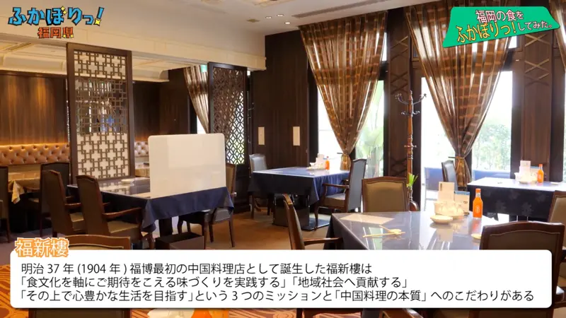

へ

How do you like Wednesday? · Episode 1
深夜バス、オレンジライナー、東京から西へ約900キロ。
"The overnight bus, the Orange Liner, [heading] about 900 km west from Tokyo."
へ (said "e") marks the direction something moves in: toward. It goes right after a place or a direction word: 西 + へ.
There's no verb here at all, and へ still tells you the bus is on its way somewhere. It answers "Heading which way?": west.
Same in polite and casual speech. With 行く, 来る, 帰る you can use へ or に: へ leans on the direction, に on the spot you land.
Examples
Leaving the office, a coworker asks where you're off to.
駅へ行きます。
"I'm heading to the station."
駅に行きます means the same thing. With 行く, either one is fine.
Watching birds fly over in autumn.
鳥が南へ飛んでいく。
"The birds are flying south."
No destination, just a direction. That's へ's home turf.
Labelling a present for your mom.
母へのプレゼント
"A present for Mom."
へ + の lets you put "to someone" in front of a noun. に can't do this: にの doesn't exist.
With and without
京都に着いた。
"I arrived in Kyoto." The point is that you're there now.
京都へ向かった。
"I headed for Kyoto." The point is the direction. You might still be on the way.
Sentence mining

YouTube · video
前回は、アウトポストからちょっと南へ行った、海沿いのところに、家を建てたんですよね。
"Last time, I built a house by the sea, a little way south of the outpost."
南へ行った: "went south". A direction word, so へ fits naturally.

How do you like Wednesday? · Episode 1
北海道とか、ローカル番組って、"どこかへ行こう"っていう案内、いろいろ…まあ国内であったり、海外であったり、観光地。
"Local shows, like in Hokkaido, have all kinds of 'let's go somewhere' guides... in Japan, abroad, tourist spots."
どこかへ行こう: "let's go somewhere". No set place, just going off somewhere.

NHK News Web Easy · article
雪が降る所へ車で行くときは、スタッドレスタイヤなどの冬のタイヤとチェーンを準備して、気をつけて運転してください。
"When you drive somewhere it snows, get winter tyres and chains ready and drive carefully."
雪が降る所 is "a place where it snows", and へ points the trip there.

YouTube · video
中国料理の本質への、こだわりがあります。
"We're really particular about the essence of Chinese cooking."
への again: the こだわり is aimed toward the essence. Nobody's moving, but the feeling has a direction.
Reference
A Dictionary of Basic Japanese Grammar
Entry "e" (へ) · pp. 116–117